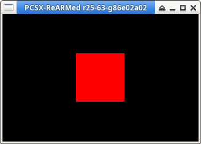

參考資訊：
https://psx.arthus.net/starting.html
https://github.com/ABelliqueux/nolibgs_hello_worlds#installation
main.c
#include <sys/types.h>
#include <stdio.h>
#include <libgte.h>
#include <libetc.h>
#include <libgpu.h>
int main(int argc, char *argv[])
{
const int w = 320;
const int h = 240;
u_long ot = 0;
DISPENV disp = { 0 };
DRAWENV draw = { 0 };
long flag = 0;
long depth = 0;
POLY_F4 *poly = 0;
char buf[32768] = { 0 };
MATRIX PolyMatrix = { 0 };
SVECTOR RotVector = { 0 };
SVECTOR VertPos[4] = {
{ -20, -20, 1 },
{ -20, 20, 1 },
{ 20, -20, 1 },
{ 20, 20, 1 }
};
ResetGraph(0);
InitGeom();
SetGeomOffset(w / 2, h / 2);
SetDefDispEnv(&disp, 0, 0, w, h);
SetDefDrawEnv(&draw, 0, 0, w, h);
SetDispMask(1);
setRGB0(&draw, 0, 0, 0);
draw.isbg = 1;
PutDispEnv(&disp);
PutDrawEnv(&draw);
FntLoad(640, 0);
FntOpen(100, 100, w, h, 0, 255);
while (1) {
poly = (POLY_F4 *)buf;
setPolyF4(poly);
setRGB0(poly, 255, 0, 0);
RotMatrix(&RotVector, &PolyMatrix);
SetRotMatrix(&PolyMatrix);
RotTransPers(&VertPos[0], (long *)&poly->x0, &depth, &flag);
RotTransPers(&VertPos[1], (long *)&poly->x1, &depth, &flag);
RotTransPers(&VertPos[2], (long *)&poly->x2, &depth, &flag);
RotTransPers(&VertPos[3], (long *)&poly->x3, &depth, &flag);
addPrim(&ot, buf);
FntFlush(-1);
DrawSync(0);
VSync(0);
PutDispEnv(&disp);
PutDrawEnv(&draw);
DrawOTag(&ot);
}
return 0;
}
